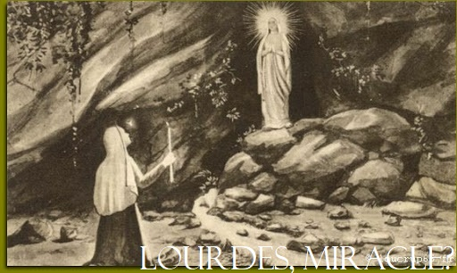

Paroisse Orthodoxe Sainte Clotilde
Réfutation du Papisme ("Catholicisme" Romain)
Miracles et apparitions dans le "Catholicisme" romain: un point de vue orthodoxe
Vous pouvez aussi regarder cette vidéo sur notre chaîne YouTube en cliquant
ici
